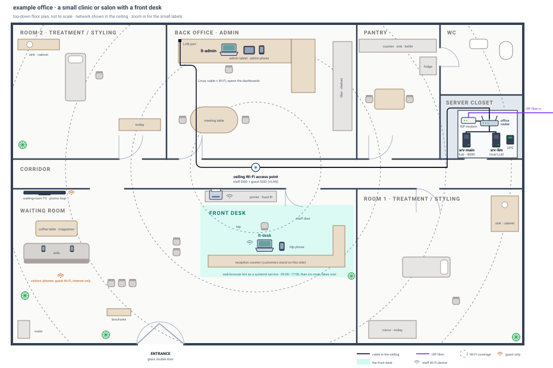
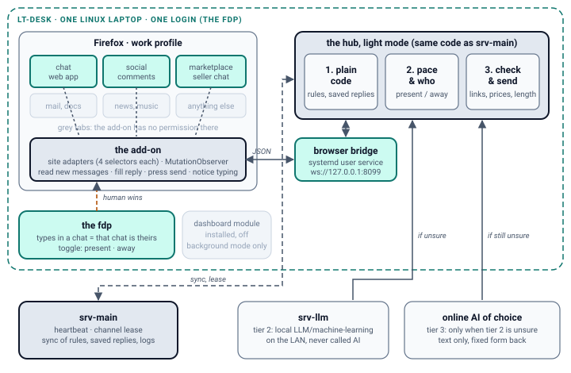
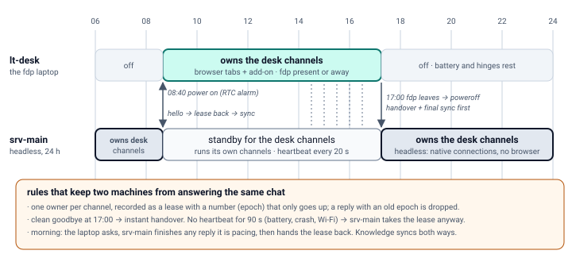

front desk
The front desk is where a business meets its customers, and today most of that meeting happens in chat windows and comment threads. This paper describes a web-browser bot that runs as a systemd service on the front-desk laptop: a small Firefox add-on plus a local service that read incoming chats and social media comments, pass them to the office's own chat hub, and type the approved answer back into the page. It answers questions, takes bookings and appointments, and receives complaints, so the person at the desk can step away without the desk going silent.
This is not a thought experiment: the setup described here is implemented and running. It is the follow-up to command center, which describes the hub on the server. This paper covers the rest of the office around it: the network, the two quiet servers, the admin's devices and, above all, the front desk. It is written for technical readers, so expect commands, configuration and diagrams. Feed it to an AI of your choice and it should be able to draft an implementation plan for your own office; the last section is written for exactly that.
0. words used in this paper
- fdp: the front-desk person, or the desk itself. Whoever sits there, whatever their shift.
- LLM/machine-learning/AI: what is sold today as "AI" is, in almost every case, a large language model (LLM) or another machine-learning model: statistics at enormous scale, very useful, not a mind. This paper keeps that in view by writing LLM/machine-learning/AI wherever the difference matters. From section 3 on, plain "AI" means one thing only: an online model from a provider of your choice, paid per use or on a free tier. What runs on the office's own hardware is never called AI here. It is the LLM server, or the local model.
- the hub: the chat service from the command center paper. It holds the chat accounts, decides what to say and when, and keeps a person in charge.
- a channel: one chat account or one comment feed, on any platform, wired into the hub.
- machine names are examples:
srv-main,srv-llm,lt-admin,lt-desk, on192.168.1.0/24.
1. the office: two routers, on purpose
Most small offices run on whatever box the internet provider installed: modem, router, Wi-Fi and DHCP in one plastic shell, default password still on the sticker. It works, in the way a single extension cord works for a whole floor. This setup puts a second, proper router below it and lets the provider's box do the one thing it is good at: being a modem.

What the office router buys, here with OpenWrt as the example, though any router firmware you can configure properly will do:
- Separate networks: staff LAN and Wi-Fi on one network, guest Wi-Fi (visitors, the waiting-room TV) on another that reaches the internet and nothing else. Smart TVs and visitors' phones never see the file server.
- Fixed addresses and local names: DHCP reservations, so
srv-main.lanis always192.168.1.10and every bookmark keeps working. - Smart queueing (SQM, the cake qdisc): a nightly backup upload or a large download no longer ruins everyone's video call.
- A way in from outside: WireGuard on the router, or a mesh VPN such as Tailscale on the servers, so staff reach the office from anywhere without a single dashboard being opened to the internet (section 10).
- Network-wide ad and tracker blocking (OpenWrt's adblock package, or Pi-hole / AdGuard Home on the server), per-device traffic counts, and a guest Wi-Fi that can switch itself off after hours.
- Independence: when the provider swaps their box, the office notices nothing. Every setting lives on your router.
# OpenWrt: give srv-main a fixed address and a local name (example values) uci add dhcp host uci set dhcp.@host[-1].name='srv-main' uci set dhcp.@host[-1].mac='aa:bb:cc:00:00:10' uci set dhcp.@host[-1].ip='192.168.1.10' uci commit dhcp && /etc/init.d/dnsmasq restart # the provider's box: switch its Wi-Fi off, and put it in bridge mode if it allows that. # if it does not, double NAT is harmless here: nothing in this office needs an inbound port # except a self-hosted WireGuard endpoint, which gets one forwarded UDP port on the provider's box # (a mesh VPN such as Tailscale needs none at all, see section 10).
2. the machines and the people
srv-main, the main server. A headless Linux box: an old desktop or mini PC, no screen, no keyboard, on cable next to the router.
It runs the hub and its command center on http://srv-main.lan:8080, and it is also the office's general workhorse.
Open source makes a small business server cheap and almost embarrassingly capable. A selection, all light enough to share one modest machine:
| job | open-source tool |
|---|---|
| shared folders for the office | Samba (with the Windows and macOS clients it already speaks to) |
| sync between laptops and server | Syncthing |
| backups, encrypted, versioned | restic or BorgBackup; rclone for an off-site copy in Google Drive |
| database | PostgreSQL, or SQLite files for small tools |
| printing for every device | CUPS |
| DNS filtering | Pi-hole or AdGuard Home (or on the router) |
| web admin of the box itself | Cockpit |
| is everything up? | Uptime Kuma |
| push alerts to staff phones | ntfy, self-hosted |
| scanned paperwork, searchable | Paperless-ngx |
| shared passwords | Vaultwarden |
| scripts, configs and site adapters under version control | Forgejo |
| small automations without code | Node-RED |
| the promo loop on the waiting-room TV | Jellyfin (one firewall rule lets the guest TV reach it) |
srv-llm, the LLM server. A second headless box beside the first, with as much memory as you can spare (16 to 32 GB) and, if the budget allows, a modest graphics card. It runs local models through Ollama or llama.cpp and answers only on the LAN. It does the cheap, frequent machine-learning work: language detection, translation, sorting a message into a topic, finding the nearest saved reply by meaning (embeddings) rather than by keyword, and turning voice notes into text with whisper.cpp. For the staff it can also serve Open WebUI, a private chat page for drafting and summarising that never leaves the building.
lt-admin, the admin's laptop (plus their phone and tablet). Linux as well, close to the router, so it has both cable and Wi-Fi.
It is a place for manual work: LibreOffice, Google Workspace in the browser, Google Drive through rclone, a VNC viewer, an SSH terminal.
It also opens the dashboards: the hub's command center on srv-main, Cockpit on both servers, the status page of srv-llm.
Several pages do not fit one dashboard? Open several tabs. Nothing of the hub is installed here: when the admin wants something automated, it runs on srv-main.
Say the admin runs the technical channel (admin_tech): they answer it from the command center, on whichever device is at hand.
lt-desk, the fdp's laptop (plus their phone). The subject of this paper. It runs the front_desk channels: the main business chat accounts and the
business's social media comments, the public face of the company. Unlike the admin's laptop, it runs its own copy of the hub, in light mode, and the web-browser bot.
3. three tiers of thinking, cheapest first
The command center paper describes the hub's pipeline: plain code first, AI second, plain code last. With an LLM server in the office, a tier slots in between, and the expensive call to the internet becomes the exception.
- Plain code on the machine itself: clean the text, match keywords and fuzzy phrases against the saved replies, apply the business rules. A clear match is answered word for word with no model involved.
- The LLM server: when plain code is unsure, the local model detects the language, translates, picks the closest saved replies by meaning, and sorts the message (question, booking, complaint, spam). Often that is enough to choose a saved reply after all. Cost: electricity.
- AI, online: only what the LLM server cannot settle goes out, text only, with personal data stripped, and the model fills a fixed form instead of chatting freely.
- Plain code again: whatever came back is checked (links on an allow-list, no prices the rules did not provide, length) before it is sent, at human pace.
// /etc/hub/tiers.json (example)
{
"plain": { "fuzzy_accept": 0.86, "min_gap_to_runner_up": 0.15 },
"local": { "url": "http://srv-llm.lan:11434", "model": "small-instruct",
"embed_model": "multilingual-small", "accept": 0.80, "timeout_s": 20 },
"online": { "provider": "any", "text_only": true, "strip_personal_data": true,
"max_calls_per_day": 200 }
}
The point is not only cost. Every tier that answers on site is a message that never leaves the building, and an office whose desk keeps working when the internet provider has a bad day.
4. one hub, many channels, and the browser is just another one
The hub does not care where a message comes from. Each platform is wired in through a channel adapter, and every adapter speaks the same small language to the hub: here is an incoming message, here is a reply to send, a person just took over this chat.
- Native channels run headless on the server: official APIs and webhooks, open protocols such as Matrix and Signal, email, the chat box on the business's own website. These are the first choice wherever they exist.
- The browser channel covers everything a person can open in a browser tab but no API reaches: a marketplace seller chat, a comment section, a web inbox. The web-browser bot is nothing more than this adapter: it carries chats from browser tabs to the hub and carries the hub's answer back.
That modesty is the point. The add-on holds no business logic, no saved replies and no AI keys. Swap the hub for another system tomorrow, one that drafts social media posts for instance, and the same add-on can feed that one too. In this paper it answers chats and comments; the same pattern can drive any task that lives in a browser tab.
5. inside the front-desk laptop

Four parts, each replaceable on its own:
- Firefox, work profile: one named profile (here
desk-work) holds the logged-in work accounts. The fdp uses the same browser for everything else as well (email, documents, music), which keeps the account's activity looking like what it is: a person at a desk. - The add-on: content scripts in the work tabs only, and one background script holding a WebSocket to the local bridge.
- The browser bridge: a systemd user service in the fdp's session, listening on
127.0.0.1:8099only. It checks the add-on's token, knows which profile is its client, and relays messages to the hub. - The hub, light mode: the same code as on
srv-main, started with a lighter configuration (fewer channels, smaller caches, the dashboard module installed but switched off), as a system service with its own account.
5.1 the add-on
A WebExtension is three small files and a folder of site adapters. A site adapter is a short map of CSS selectors. Four are required for each site, plus a few optional ones that make it smarter:
// adapters.js: one entry per site; the only file that changes when a site redesigns
const ADAPTERS = {
"chat.example-market.com": {
unreadRow: "[data-unread='true']", // 1. a conversation with unread messages
incoming: ".msg-in .msg-text", // 2. an incoming message bubble
input: "div[contenteditable='true']", // 3. the reply box
send: "button[aria-label='Send']", // 4. the send button (else: Enter)
chatTitle: ".conv-header .name", // optional: who this chat is with
outgoing: ".msg-out .msg-text" // optional: replies, to spot ones the hub did not send
}
};
// manifest.json (Manifest V2: Firefox keeps supporting it, and its background page stays alive,
// which a long-lived WebSocket needs; MV3 works too, with a keep-alive)
{
"manifest_version": 2,
"name": "desk bridge",
"version": "0.1.0",
"browser_specific_settings": { "gecko": { "id": "desk-bridge@example.org" } },
"permissions": ["storage", "https://chat.example-market.com/*", "https://comments.example-social.com/*"],
"background": { "scripts": ["background.js"], "persistent": true },
"content_scripts": [{
"matches": ["https://chat.example-market.com/*", "https://comments.example-social.com/*"],
"js": ["adapters.js", "content.js"],
"run_at": "document_start"
}],
"browser_action": { "default_popup": "popup.html", "default_title": "desk: present / away" }
}
The matches list is also the privacy boundary: the add-on has no access at all to any other tab. The fdp's personal browsing stays theirs, and that is worth saying to them in writing.
// content.js: runs in each work tab; reads, reports, types, and notices the human
const A = ADAPTERS[location.hostname];
const port = browser.runtime.connect({ name: location.hostname });
const seen = new WeakSet();
const chatId = () => document.querySelector(A.chatTitle)?.textContent.trim() || location.pathname;
function scan(report) {
for (const el of document.querySelectorAll(A.incoming)) {
if (seen.has(el)) continue;
seen.add(el);
if (report) port.postMessage({ type: "inbound", site: location.hostname, chat: chatId(),
text: el.innerText.trim(), at: Date.now() });
}
}
addEventListener("DOMContentLoaded", () => {
scan(false); // what is already on screen is history
new MutationObserver(() => scan(true)).observe(document.body, { childList: true, subtree: true });
});
// a real key press in the reply box means a person is answering this chat
addEventListener("keydown", e => {
if (e.isTrusted && e.target.closest?.(A.input))
port.postMessage({ type: "owner", site: location.hostname, chat: chatId(), at: Date.now() });
}, true);
port.onMessage.addListener(async m => {
if (m.type !== "outbound") return;
if (m.chat !== chatId()) return port.postMessage({ type: "nack", id: m.id, why: "chat not open" });
const box = document.querySelector(A.input);
box.focus();
document.execCommand("insertText", false, m.text); // still the most widely accepted way into rich editors
await new Promise(r => setTimeout(r, 300 + Math.random() * 500));
const btn = document.querySelector(A.send);
if (btn) btn.click();
else box.dispatchEvent(new KeyboardEvent("keydown", { key: "Enter", code: "Enter", bubbles: true }));
port.postMessage({ type: "sent", id: m.id, at: Date.now() });
});
// background.js: one WebSocket to the bridge, many tabs
const tabs = new Map();
let ws;
async function connect() {
const { token, profile } = await browser.storage.local.get(["token", "profile"]);
ws = new WebSocket("ws://127.0.0.1:8099/");
ws.onopen = () => ws.send(JSON.stringify({ type: "hello", token, profile, version: "0.1.0" }));
ws.onmessage = e => {
const m = JSON.parse(e.data);
for (const p of tabs.values()) if (p.name === m.site) p.postMessage(m);
};
ws.onclose = () => setTimeout(connect, 3000);
}
browser.runtime.onConnect.addListener(p => {
const id = p.sender.tab.id;
tabs.set(id, p);
p.onMessage.addListener(m => ws?.readyState === 1 && ws.send(JSON.stringify({ ...m, tab: id })));
p.onDisconnect.addListener(() => tabs.delete(id));
});
connect();
Opening unread conversations (selector 1) is a job for the hub's pacing, not for the add-on's reflexes: the hub asks for "open the next unread chat on this site" when it is ready, the same way a person would work through a list.
Installing it by hand. Release builds of Firefox only keep signed add-ons. Two clean ways, both outside any public store:
- Self-distributed signing: Mozilla signs "unlisted" add-ons for free without publishing them. Run
web-ext sign --channel=unlistedwith your API keys, get back a signed.xpi, install it in the work profile through about:addons, "Install Add-on From File". It survives restarts and updates like any other add-on. - Firefox ESR or Developer Edition with
xpinstall.signatures.requiredset to false, if you would rather not sign at all.
# build and sign (keys from your Mozilla add-ons developer account, kept out of the repo)
npx web-ext lint
npx web-ext sign --channel=unlisted --api-key="$AMO_JWT_ISSUER" --api-secret="$AMO_JWT_SECRET"
# optional, for several desks: let Firefox install it by policy
# /etc/firefox/policies/policies.json
{ "policies": { "ExtensionSettings": {
"desk-bridge@example.org": { "installation_mode": "normal_installed",
"install_url": "file:///opt/desk-addon/desk-bridge.xpi" } } } }
5.2 the message contract
Everything that crosses between add-on, bridge and hub is one line of JSON. Small enough to read in a log, strict enough to test.
| type | from → to | meaning |
|---|---|---|
hello | add-on → bridge | token, profile name, add-on version; the bridge accepts exactly one profile |
heartbeat | bridge → hub → srv-main | every 20 s: this desk is alive, these channels are open |
inbound | add-on → hub | site, chat, text, time |
open-next | hub → add-on | open the next unread conversation on this site |
outbound | hub → add-on | id, site, chat, text, lease epoch |
sent / nack | add-on → hub | done, or why not (chat not open, box missing, selector broken) |
owner | add-on → hub | a person is typing in this chat, or a reply appeared that the hub did not send |
mode | popup or dashboard → hub | present or away |
{"type":"inbound","site":"chat.example-market.com","chat":"Rina S.","text":"is the 10am slot on Friday still free?","at":1767000000000,"tab":12}
{"type":"outbound","id":"o-3f9a","site":"chat.example-market.com","chat":"Rina S.","text":"Yes, Friday 10:00 is free. Shall I book it for you?","epoch":41}
5.3 present, away, and the human always wins
The fdp has one switch, in the add-on's popup and on the command center: present or away.
- Present: the fdp answers. The hub prepares a reply for every incoming message but holds it. If the fdp has not answered within the pace window (the same randomised wait the hub uses everywhere, 60 to 90 seconds in the trial setup, shorter for urgent words), the prepared reply goes out. On a busy morning that catches the messages that would otherwise wait twenty minutes.
- Away: the hub answers everything it is confident about, at human pace, and flags the rest for a person.
- Either way, a person wins per chat, not per laptop: a real key press in a chat's reply box, or a reply that appears without the hub having sent it (typed on the fdp's phone, for instance), drops whatever the hub was preparing for that chat and keeps the hub out of it for a set time. The fdp can be on another tab, in the same profile, doing something else entirely, and the hub still knows exactly which chats are theirs.
And the customer never hears the b-word. When asked, the answer is honest without it, as described in the command center paper: an automatic reply service, with a team member reading every chat.
5.4 the services, and a laptop that never sleeps
# ~/.config/systemd/user/browser-bridge.service (in the fdp's session) [Unit] Description=Browser bridge: work tabs to the local hub After=graphical-session.target [Service] ExecStart=/opt/hub/bin/browser-bridge --listen 127.0.0.1:8099 --profile desk-work --hub http://127.0.0.1:8081 Restart=always RestartSec=5 [Install] WantedBy=graphical-session.target # enable once, as the fdp systemctl --user enable --now browser-bridge.service
# /etc/systemd/system/desk-hub.service (system service, its own account, same hardening as on srv-main) [Service] User=hub ExecStart=/opt/hub/bin/hub --config /etc/hub/desk-light.json ProtectSystem=strict ProtectHome=yes ReadWritePaths=/var/lib/hub NoNewPrivileges=yes MemoryMax=400M CPUWeight=30 Restart=always # ~/.config/autostart/desk-firefox.desktop (opens the work profile at login) [Desktop Entry] Type=Application Name=Desk Firefox Exec=firefox -P desk-work
# never suspend; let the screen blank and lock instead
sudo systemctl mask sleep.target suspend.target hibernate.target hybrid-sleep.target
sudo mkdir -p /etc/systemd/logind.conf.d
printf '[Login]\nHandleLidSwitch=ignore\nHandleLidSwitchExternalPower=ignore\n' | sudo tee /etc/systemd/logind.conf.d/desk.conf
# spare the battery of a laptop that is always plugged in (if the hardware supports it)
echo 80 | sudo tee /sys/class/power_supply/BAT0/charge_control_end_threshold
# Firefox, work profile, user.js: keep work tabs alive in the background
user_pref("browser.tabs.unloadOnLowMemory", false);
user_pref("browser.startup.page", 3); // restore the work tabs after a restart
user_pref("browser.sessionstore.resume_from_crash", true);
Keep the work tabs pinned, in a window of their own. The fdp works in other windows; the work window just has to stay open.
5.5 background tabs, focus, and the toolbox
Web chat apps were written for a person looking at them. In a background tab some of them slow their timers, some check whether the page is visible or focused, and a few ignore input that does not come from a real keyboard. None of this is a wall. A Linux laptop has every tool needed to meet a web page on its own terms; the question is only which is the lightest one that works for a given site. In rising order of effort:
- Insert text the editor's way:
execCommand("insertText")or anInputEventof typeinsertText. Most rich editors accept it. - Tell the page it is visible and focused: a content script at
document_startcan override what the page reads. - Give the work browser a screen of its own: run the work window on a nested X display (Xephyr) inside the fdp's desktop, so automated focus never fights the person's focus.
- Real input from the operating system: xdotool on X11, or ydotool through a virtual uinput device on any display server. Input arriving through the kernel is as real as a USB keyboard.
- Two pointers at once: X11's Multi-Pointer X (
xinput create-master) creates a second, independent pointer and keyboard focus. A script can click in the work window while the fdp keeps working in theirs.
// content script at document_start: the page always believes it is on screen (Firefox)
const d = document.wrappedJSObject;
Object.defineProperty(d, "visibilityState", { get: exportFunction(() => "visible", window) });
Object.defineProperty(d, "hidden", { get: exportFunction(() => false, window) });
d.hasFocus = exportFunction(() => true, window);
# a second, independent pointer for the automation (X11)
xinput create-master desk-auto
xinput list | grep desk-auto
Most of the toolbox is X11. The desk laptop therefore runs a light desktop on Xorg (Xfce here), which also leaves more memory for the browser. On a Wayland-only desktop, ydotool still works, and screen sharing goes through the desktop's own remote-desktop service instead of VNC.
6. bookings, appointments and complaints
Answering questions is half of a front desk. The other half is taking things in: bookings, appointments, complaints. Bookings and appointments live in Google Calendar, through a small Google Apps Script web app. The hub never holds the calendar password; it holds one shared secret for one script.
- The customer asks for a time. Plain code or the LLM server recognises a booking and pulls out what was asked: service, date, time, location.
- The hub asks the script for free slots and offers two or three. It never invents availability.
- The customer picks one. The hub sends the booking: the script takes a lock, checks the slot again, creates the calendar event, writes a row in the log Sheet and sends a confirmation email.
- The confirmation goes out from the business's own domain through its mail provider's HTTP API (or a self-hosted, open-source mail server such as Postal), not from a personal mailbox.
- The hub replies in the chat with the confirmed time. Anything unusual (a group, a slot outside the rules, a returning customer with notes) is held for a person.
// Apps Script web app (deploy: execute as the owner, access: anyone with the link;
// the shared secret, not the link, is what protects it)
const P = PropertiesService.getScriptProperties();
const out = o => ContentService.createTextOutput(JSON.stringify(o)).setMimeType(ContentService.MimeType.JSON);
function doPost(e) {
const req = JSON.parse(e.postData.contents);
// Apps Script cannot read request headers, so the secret travels in the body
if (req.token !== P.getProperty("HUB_TOKEN")) return out({ ok: false, error: "denied" });
const cal = CalendarApp.getCalendarById(P.getProperty("CALENDAR_ID"));
if (req.action === "slots") return out({ ok: true, slots: freeSlots(cal, new Date(req.day), req.minutes) });
if (req.action === "book") {
const lock = LockService.getScriptLock();
lock.waitLock(10000);
try {
const start = new Date(req.start), end = new Date(start.getTime() + req.minutes * 60000);
if (cal.getEvents(start, end).length) return out({ ok: false, error: "taken" });
const ev = cal.createEvent(req.service + " · " + req.name, start, end,
{ description: "channel: " + req.channel + "\nphone: " + req.phone });
SpreadsheetApp.openById(P.getProperty("LOG_SHEET_ID")).getSheetByName("bookings")
.appendRow([new Date(), req.channel, req.name, req.phone, req.email, req.service, start, ev.getId()]);
if (req.email) sendConfirmation(req, start);
return out({ ok: true, eventId: ev.getId() });
} finally { lock.releaseLock(); }
}
return out({ ok: false, error: "unknown action" });
}
function sendConfirmation(req, start) {
UrlFetchApp.fetch(P.getProperty("MAIL_API_URL"), {
method: "post", contentType: "application/json",
headers: { Authorization: "Bearer " + P.getProperty("MAIL_API_KEY") },
payload: JSON.stringify({ from: P.getProperty("MAIL_FROM"), to: req.email,
subject: "Your appointment is confirmed",
text: "Hello " + req.name + ", see you on " +
Utilities.formatDate(start, Session.getScriptTimeZone(), "EEEE d MMMM, HH:mm") + "." })
});
}
function freeSlots(cal, day, minutes) {
const open = 9, close = 17, slots = []; // or read opening hours from a "rules" tab
for (let h = open; h < close; h++) {
const s = new Date(day); s.setHours(h, 0, 0, 0);
const e = new Date(s.getTime() + minutes * 60000);
if (s > new Date() && !cal.getEvents(s, e).length) slots.push(s.toISOString());
}
return slots;
}
# the hub's side, as a curl you can test from lt-admin (example values)
curl -sL -X POST "$BOOKING_URL" -H 'Content-Type: application/json' \
-d '{"token":"'"$HUB_TOKEN"'","action":"slots","day":"2027-01-15","minutes":60}'
Complaints are never closed by a machine. The hub recognises one (plain code for the obvious words, the LLM server for the rest), answers with a saved acknowledgement that promises a person and a time ("our team will contact you before 3 pm today"), writes a row in a complaints tab with the chat link, and alerts a person: the fdp if present, the admin through ntfy and email if not. What it can collect without arguing (order number, date, a photo) it collects, so the person starts with the facts.
7. the day: one owner per channel, always
The laptop is not built to run around the clock, and it should not. The fdp's day is roughly 09:00 to 17:00; outside it, the same channels belong to srv-main.
The two machines run the same hub code on the same knowledge, so the handover is a change of owner, not a change of system.

- Morning: the laptop powers on (by RTC alarm, or by the fdp). The system services start at boot; the fdp logs in, the bridge and Firefox start with the session. The hub says hello to
srv-main, syncs, and asks for the lease on the desk channels.srv-mainfinishes any reply it is pacing, then hands the lease over with a higher epoch. - Day: the hub sends a heartbeat every 20 seconds.
srv-mainkeeps running its own channels (the admin's, the native ones) and stands by for the desk. - 17:00: the fdp shuts the laptop down. Before the network goes down, a stop job hands the lease back and runs a final sync.
srv-maintakes the desk channels exactly as the laptop took them in the morning, but headless: through its own native connections, no browser needed. - Without a goodbye (battery, crash, Wi-Fi gone): after 90 seconds without a heartbeat,
srv-maintakes the lease anyway. If the laptop comes back with old intentions, its replies carry an old epoch and are dropped.
# /etc/systemd/system/desk-handover.service # Stop jobs run in reverse start order: this one stops before the hub and the network, # so the hub is still there to sync and the LAN is still up to reach srv-main. [Unit] Description=Take the desk lease at boot, give it back at shutdown Wants=network-online.target After=network-online.target desk-hub.service [Service] Type=oneshot RemainAfterExit=yes ExecStart=/opt/hub/bin/desk-lease take --from http://srv-main.lan:8080 --wait 120 ExecStop=/opt/hub/bin/desk-lease give --to http://srv-main.lan:8080 --sync ExecStop=/opt/hub/bin/desk-wake-tomorrow 08:40 TimeoutStopSec=90 [Install] WantedBy=multi-user.target
#!/bin/sh # /opt/hub/bin/desk-wake-tomorrow: set the RTC alarm for the next working morning (Mon to Sat here) t=$(date -d "tomorrow $1" +%s) while [ "$(date -d @"$t" +%u)" -eq 7 ]; do t=$((t + 86400)); done rtcwake -m no -t "$t"
What syncs, and how. Knowledge (business profile, saved replies, rules, site adapters) lives in one folder kept identical by Syncthing on both machines.
Logs never conflict, because each machine writes only its own file (logs/lt-desk.jsonl, logs/srv-main.jsonl) inside that folder.
Live state that must not be shared by two writers (who owns which channel, which chats a person holds) goes through the lease API on srv-main, never through file sync.
# the lease API, as seen from lt-admin (example)
curl -s http://srv-main.lan:8080/api/lease/front_desk
{"channel":"front_desk","holder":"lt-desk","epoch":41,"since":"2027-01-15T08:41:07+07:00","last_heartbeat_s":12}
Channels that only exist in a browser. After 17:00, srv-main serves the desk channels through native connections. Some platforms, typically a marketplace's seller chat
or a comment section, have no native connection at all. What to do with those is your call, and the right answer differs per platform:
- check for an official seller API or webhook first; marketplaces increasingly offer one, and it is the cleanest route,
- forward the platform's own notification emails into the hub and answer in the morning,
- run a headless browser on
srv-main(Firefox or Chromium under Xvfb, driven by Playwright or Puppeteer) with its own login for that account, never a copied profile, - or simply let those channels rest overnight, with an auto-response set on the platform itself where it offers one.
8. background mode: the laptop without a person
The dashboard module is installed on lt-desk but switched off. Some days call for it: the fdp is out sick and the admin wants the laptop to keep its desk,
or a platform only behaves on the laptop's network fingerprint. Then the admin starts background mode remotely, and the browser work runs on a virtual display, the way a server would run it.
Before anything starts, a guard makes sure nobody is using the laptop's real screen:
#!/bin/bash
# /opt/hub/bin/desk-background-guard: refuse background mode while the real screen is in use
set -euo pipefail
if loginctl list-sessions --no-legend | awk '$4=="seat0" && $3!~/^(lightdm|gdm|sddm)$/ {f=1} END {exit !f}'; then
echo "someone is logged in on the laptop's own screen"; exit 1
fi
if pgrep -u fdp -f 'firefox.*desk-work' >/dev/null; then
echo "the work profile is already open"; exit 1
fi
if ss -ltn | grep -qE ':59[0-9]{2}\b'; then
echo "a VNC server is running"; exit 1
fi
systemctl start desk-background.service # Xvfb :99 + firefox -P desk-work + bridge, as the fdp account
systemctl start hub-dashboard.service # the command center on lt-desk, LAN only
Once background mode runs, the admin opens http://lt-desk.lan:8080 like any other dashboard. When the fdp logs in again, a login hook stops background mode before Firefox opens.
9. remote hands: VNC through SSH
Everything here can be done from lt-admin over the LAN, or from anywhere through the VPN described in the next section. One rule prevents most of the strange problems:
The account that logs in on a screen (:0) is never the account used for remote sessions, and the remote account never logs in on a screen.
Two logins of one account on two displays share one home folder, one browser profile lock and one set of user services, and they fight.
- Watching the fdp's live screen (with their knowledge): SSH in as the remote account, start a VNC server on display
:0as the fdp, bound to localhost only, then tunnel it. - A desktop on a headless server: TigerVNC's
vncserver@:1service gives the remote account its own virtual desktop onsrv-mainorsrv-llm; nobody ever logs in there on a physical screen anyway.
# on lt-admin: log in to lt-desk with the remote-only account
ssh ops@lt-desk.lan
# on lt-desk: share the live screen :0, listening on localhost only
# (the Xauthority path depends on the display manager; LightDM uses the home folder)
sudo -u fdp env DISPLAY=:0 XAUTHORITY=/home/fdp/.Xauthority \
x0vncserver -interface 127.0.0.1 -rfbport 5900 -PasswordFile /home/fdp/.vnc/passwd &
# on lt-admin, second terminal: tunnel, then view
ssh -N -L 5901:127.0.0.1:5900 ops@lt-desk.lan
vncviewer 127.0.0.1:5901
# done: stop sharing
ssh ops@lt-desk.lan 'sudo pkill -u fdp x0vncserver'
# a virtual desktop on a headless server, for the remote account only
echo ':1=ops' | sudo tee -a /etc/tigervnc/vncserver.users
sudo systemctl enable --now vncserver@:1
10. from outside the office
The office is the home of the system, not a cage for it. The admin checks the command center from home on a Sunday, the fdp answers a chat from their phone on the way in, someone fixes a broken site adapter from another city. All of that works without opening a single dashboard, SSH or VNC port to the internet. The rule is simple: nothing listens on the public internet; people join the office network privately instead.
Three ways to do that, from most self-hosted to least work:
| route | good at | watch out for |
|---|---|---|
| WireGuard on the office router (OpenWrt has it built in) | fully yours; no third party; very fast | needs one UDP port forwarded and a reachable public address. Many providers put homes and small offices behind carrier-grade NAT (CGNAT), and then nothing can reach the router from outside. |
| Tailscale, a mesh VPN built on WireGuard | works behind CGNAT and double NAT with no port forwarding; device names; access rules; apps for every phone and laptop; a free tier that covers a small office | the coordination service belongs to a company; the clients are open source and the traffic is end-to-end encrypted, but who may join is decided on their servers. |
| Headscale with the Tailscale clients | the same mesh, with the coordination server self-hosted | Headscale itself must be reachable, so it needs a public address of its own, usually a small cloud server. |
The setup described here uses the mesh. It does not care what the provider does with addresses, and it turns "is the router's port open?" into a question nobody has to ask again.
Tailscale does not have to be installed on every office machine: srv-main acts as a subnet router and makes the whole office LAN reachable to devices on the private network,
so srv-llm, the printer and the router itself stay exactly as they are.
# on srv-main: join the private network and offer the office LAN to it
sudo dnf install tailscale # after adding Tailscale's package repository, or use their install script
sudo systemctl enable --now tailscaled
echo 'net.ipv4.ip_forward = 1' | sudo tee /etc/sysctl.d/99-subnet-router.conf
sudo sysctl -p /etc/sysctl.d/99-subnet-router.conf
sudo tailscale up --advertise-routes=192.168.1.0/24 --advertise-tags=tag:office --ssh
# approve the route once in the admin console (or with headscale on your own server)
# on lt-admin, away from the office: use the advertised route
sudo tailscale up --accept-routes
xdg-open http://srv-main.lan:8080 # same address as in the office, if DNS for .lan is shared too;
# otherwise use the IP or the machine's private-network name
Joining the network is not the same as being allowed everywhere on it. Access rules keep each person to what their job needs: the admin reaches everything; the fdp's phone reaches the command center and nothing else; the laptops never reach each other.
// access policy (Tailscale admin console or Headscale policy file), example identities
{
"groups": { "group:admin": ["admin@example.org"], "group:desk": ["desk@example.org"] },
"tagOwners": { "tag:office": ["group:admin"] },
"acls": [
{ "action": "accept", "src": ["group:admin"], "dst": ["tag:office:*", "192.168.1.0/24:*"] },
{ "action": "accept", "src": ["group:desk"], "dst": ["192.168.1.10:8080"] }
],
"ssh": [
{ "action": "check", "src": ["group:admin"], "dst": ["tag:office"], "users": ["ops"] }
]
}
# srv-main firewall: the command center answers the LAN and the private network, nobody else firewall-cmd --permanent --add-rich-rule='rule family="ipv4" source address="192.168.1.0/24" port port="8080" protocol="tcp" accept' firewall-cmd --permanent --add-rich-rule='rule family="ipv4" source address="100.64.0.0/10" port port="8080" protocol="tcp" accept' firewall-cmd --reload
A few habits that keep remote access from becoming the weak spot:
- SSH, then VNC, never VNC alone: the commands in section 9 work unchanged from outside, because
lt-desk.lanis reachable through the subnet route. VNC stays bound to localhost behind an SSH tunnel either way. - The desk lease is LAN-only. A laptop taken home and connected through the VPN may read the command center, but it may not take the desk channels from
srv-main. Handover is decided where the hardware is (a setting on the lease API:"lease_from": ["192.168.1.0/24"]). - The fdp's phone joins the private network with its own identity. The fdp can follow and answer the desk from the command center on the road; their key presses there count as "a person took over", exactly like at the desk.
- Lost device: remove it from the private network first (one click, or one
headscale nodes delete), then change the passwords it held. Device keys expire on a schedule unless you mark a server as exempt; servers yes, phones no. - Publishing on purpose: a page meant for customers (a booking page, a status page) is a different job. Put it on a public host or behind a tunnel built for publishing, such as Cloudflare Tunnel with a login in front, and keep it separate from anything that holds the chat accounts.
- Plan for the VPN being down: the office keeps working without it. Everything in this paper runs on the LAN; the VPN only adds a door, it never becomes a wall.
11. why this matters beyond one desk
Strip away the chat platforms and what is left is a pattern: a person's work in a browser, watched by a small adapter, handed to a system that runs on the office's own machines, with a person able to take over any single piece at any moment. Today it answers chats and comments. The same adapter can fill in a supplier's order portal, post the week's content prepared by another system, reconcile a marketplace's payouts, or keep an eye on a government portal for a status change. Anything that can be opened in a browser tab can be helped this way.
None of it is about replacing the fdp. It is about the twentieth identical question of the morning, the booking that arrives while they are on the phone, the complaint that lands at 16:58, and the evening they can spend not thinking about any of it. Less repetition, less fatigue, fewer things to remember, and the judgment stays with the person.
It is also a rehearsal. Agents that act on people's behalf are coming, and businesses' agents will talk to customers' agents: your bot talks to my bot, and somewhere in between a person still decides. Whether those agents run on hardware the business owns, in formats anyone can read, with a person in the loop, or only inside a few platforms that rent them back to everyone else, is being decided now. That film has played before, with operating systems, office files and social networks. The way to a better ending is the same as it was then: build it in the open, run it on your own machines, and make it boring enough that every small office can.
12. risks and limits
- Automating a proprietary platform's web interface can be against its terms of service. Human pace, a person in the loop and real use of the account keep the risk low, not zero. Prefer official APIs wherever they exist.
- Web pages change. A redesign can break a site adapter overnight. The add-on reports
nackwith a reason, the command center shows it, and fixing a selector is a two-minute edit kept under version control. - The add-on has no access outside its listed work sites, but staff deserve to know exactly what runs on their laptop and what it can see. Tell them in writing; check local law on workplace monitoring.
- Chat logs, bookings and complaints are personal data. The LLM server keeps most of it in the building; whatever goes to an online AI should be stripped first, and free tiers may use inputs for training.
- A laptop is not a server. Let it shut down every evening, keep its charge limited, and let
srv-maincarry the nights.
This paper is technical guidance, not legal advice. Read the terms of every platform you connect, and decide for yourself what risk fits your business.
13. implementation spec (for people, and for the AI you hand this page to)
GOAL A front-desk laptop that assists or replaces the fdp on browser-based chat and comment channels,
as one channel of an on-premise, platform-agnostic chat hub; servers take over outside office hours.
NETWORK ISP router (modem, Wi-Fi off) -> office router (OpenWrt): LAN + staff Wi-Fi + isolated guest Wi-Fi,
DHCP reservations, local DNS (*.lan), SQM.
OUTSIDE no port opened for any dashboard, SSH or VNC. Mesh VPN (Tailscale, or Headscale self-hosted) with
srv-main as subnet router for 192.168.1.0/24, tagged nodes + ACLs (admin: everything; fdp phone:
command center only); or WireGuard on the office router if a public IP exists (no CGNAT).
Firewall: :8080 from the LAN and 100.64.0.0/10 only. The desk lease may only be taken on the LAN.
MACHINES srv-main headless; hub + command center :8080; Samba, Syncthing, restic/Borg, PostgreSQL, CUPS,
ntfy, Cockpit, Uptime Kuma; lease API; native channels; takes desk channels 17:00-09:00.
srv-llm headless; Ollama or llama.cpp (:11434), embeddings, whisper.cpp; LAN only; never called "AI".
lt-admin Linux; manual work + dashboards; nothing of the hub installed.
lt-desk Linux (Xfce/Xorg); hub light mode (system service); browser bridge (user service, 127.0.0.1:8099);
Firefox profile "desk-work" + signed unlisted add-on; dashboard installed, off by default.
TIERS 1 plain code (rules, keywords, fuzzy) -> 2 srv-llm (language, translation, topic, nearest saved reply)
-> 3 online AI (text only, data stripped, fixed form) -> 4 plain-code check -> send at human pace.
ADD-ON MV2, persistent background; content scripts only on listed work hosts; per-site adapter:
unreadRow, incoming, input, send (+ chatTitle, outgoing); MutationObserver; execCommand insertText.
CONTRACT JSON lines: hello, heartbeat(20 s), inbound, open-next, outbound(epoch), sent, nack, owner, mode.
HUMAN modes present/away; present = hold reply, send after pace window if fdp silent; owner signal
(trusted key press in reply box, or reply not sent by hub) pauses the hub for that chat.
BOOKING Apps Script web app: actions slots/book; secret in body; LockService; Calendar event + Sheet row;
confirmation via the business domain's mail API. Complaints: acknowledge, log, alert, never auto-close.
HANDOVER lease per channel with increasing epoch; laptop takes lease at boot, gives it at shutdown via
systemd ExecStop ordered before hub + network; 90 s without heartbeat = srv-main takes it.
Knowledge synced by Syncthing; one log file per machine; live state only via lease API.
REMOTE VNC over SSH; screen account != remote account; x0vncserver on :0 bound to 127.0.0.1;
vncserver@:1 for headless servers. Background mode on lt-desk only after a guard confirms
no seat0 session, no work Firefox, no VNC.
BUILD in stages, each tested before the next: log only -> suggest only -> insert, person sends ->
away mode on one site -> more sites -> handover -> background mode.
credits
Every line of this setup stands on open-source work done mostly for free: the Linux kernel and the distributions built on it; systemd; X.Org, Xfce and Xephyr; Firefox and web-ext, and the WebExtensions standard that lets a small add-on do real work; OpenWrt; OpenSSH, WireGuard, Tailscale (whose clients are open source) and Headscale, and TigerVNC; Samba, CUPS and Syncthing; restic, BorgBackup and rclone; PostgreSQL and SQLite; Pi-hole and AdGuard Home; Cockpit, Uptime Kuma, ntfy, Paperless-ngx, Vaultwarden, Forgejo, Node-RED and Jellyfin; Ollama, llama.cpp, whisper.cpp and Open WebUI, and the many people who publish open-weight models; Node.js; Playwright and Puppeteer; xdotool and ydotool. Google Workspace and Apps Script carry the calendar side, and the online AI is whichever provider you are comfortable with.
The glue is small. The foundation belongs to everyone, and that is the reason to write this down.